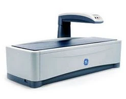

Densytometria kości
Osteoporoza długo nie daje żadnych dolegliwości. Często pierwszym sygnałem jest złamanie po zwykłym upadku. Densytometria pozwala wykryć ją wcześniej i ocenić 10-letnie ryzyko złamań (FRAX).
Badanie wykonujemy na aparacie GE Lunar Prodigy. Jest bezpieczne i bezbolesne, trwa krótko i nie wymaga specjalnego przygotowania. Najczęściej ocenia się szyjkę kości udowej i odcinek lędźwiowy kręgosłupa (L1-L4).
Kiedy warto się zbadać
- ok. 40. roku życia, gdy w rodzinie była osteoporoza
- kobiety ok. 50. roku życia, mężczyźni ok. 60.
- złamania w przeszłości, niska masa ciała
- wczesna menopauza
- długotrwałe leki: sterydy, hormony tarczycy, leki przeciwzakrzepowe
- choroby tarczycy, nerek, reumatoidalne zapalenie stawów

Poradnię osteoporozy i chorób metabolicznych kości prowadzi lek. Jacek Borowicz, specjalista densytometrii klinicznej z certyfikatem ISCD. Od 1997 roku kieruje pracowniami densytometrycznymi.